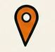
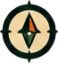
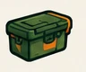
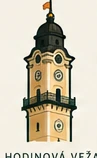
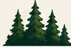
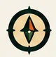

Hry a súťaže
Geocachingové aj negeocachingové výzvy pre jednotlivcov i tímy.

STREDOSLOVENSKÝ29. MÁJ 2027 · BANSKÁ BYSTRICA
Víkend plný geocachingu v srdci Slovenska.
DO ZAČIATKU EVENTU
STRETNEME SA V SRDCI SLOVENSKA
V máji 2027 sa stretneme v Banskej Bystrici na veľkom stretnutí geocacherov zo Slovenska aj zo zahraničia. Hlavný event bude centrom celého víkendu, no zďaleka nebude jeho jedinou časťou.
JEDEN EVENT NÁM NESTAČÍ
Program pre lovcov kešiek, zberateľov, súťaživé typy, milovníkov prírody aj všetkých, ktorí sa radi stretnú s ľuďmi, ktorých poznajú najmä podľa nickov.

Geocachingové aj negeocachingové výzvy pre jednotlivcov i tímy.
Čas odložiť GPSku, stretnúť starých známych a spoznať nových.

Ďalšie dôvody vyraziť objavovať Banskú Bystricu a jej okolie.

Geocachingové témy, skúsenosti, príbehy a zaujímaví hostia.
Priestor na výmenu drevených koliesok a rozšírenie zbierok.

Spoločne vyrazíme objavovať prírodu v okolí Banskej Bystrice.

Geocachingový program chceme rozložiť na celý víkend. Ďalšie stretnutia a aktivity budeme postupne predstavovať.
ZOSTAŇTE NA VÍKEND
Historické centrum, mestské kešky, výhľady, lesy, kopce aj horské chodníky. Banská Bystrica je skvelým východiskovým bodom na objavovanie stredného Slovenska.
Príďte na event. Zostaňte na víkend. Objavte s nami srdce Slovenska.